Today you will be screening data sets that were collected by students in previous offerings of this class for issues such as data entry errors and distributional problems.
Multivariate distribution problems and outliers are hard to find because of limitations on our visualization abilities, but we can eliminate most by fixing any univariate and bivariate issues we come across first. Once we have dealt with all the issues that are easy to find we will use multivariate statistical distance to screen for any remaining issues that aren't apparent one or two variables at a time.
A quick overview of the process before you start:
First, we will look for distribution issues using univariate (one variable) and bivariate (two variable) techniques, and will treat them if we find them. Specifically, we will use:
Boxplots - check for skew, unusual data points (possible outliers)
Histograms - check the shape of the distribution (check for skew, more than one mode, outliers)
Scatterplots - check for non-linearity between pairs of variables, outliers on pairs of variables (i.e. data points that are unusual in combinations of variables, but not one variable at a time).
If we find any issues that can be treated by log-transformation we will transform the variable and make the plots again.
Second, we will check for multivariate issues (such as lack of multivariate normality, unequal covariance matrices, and multivariate outliers) using Mahalanobis distances. If the data are multivariate normal and have no outliers the Mahalanobis distances should match the Chi-square distribution. We will use a quantile comparison plot of Mahalanobis distances against the Chi-square distribution to check for deviations from multivariate normality, and to identify which points are problematic.
It is likely that some of the issues in the data are due to measurement errors, which can only be fixed by re-measured the objects. I will take care of fixing issues, but will share with you what I did to fix them before you use the data. Today we will focus on how to identify the problems, and determine which data values need to be checked.
Issues with skewed data distributions, or with non-linear relationships between pairs of variables, can be dealt with using transformations - if we find those kinds of problems we will take care of them today.
Let's begin with a demonstration - the Landsat data we will be working with is made up of seven reflectance bands, which are recordings of the amount of electromagnetic (EM) radiation reflected off of the surface in seven different wavelength ranges. Ultraviolet wavelengths are scattered by the atmosphere, but infrared bands move through the atmosphere relatively freely, so the Landsat 5 satellite data we will be using recorded visible light (in three wavelength bands - blue, green, and red) and infrared light (in four wavelength bands, including near-infrared and mid-infrared ranges). The Landsat 5 satellite is shown to the left.
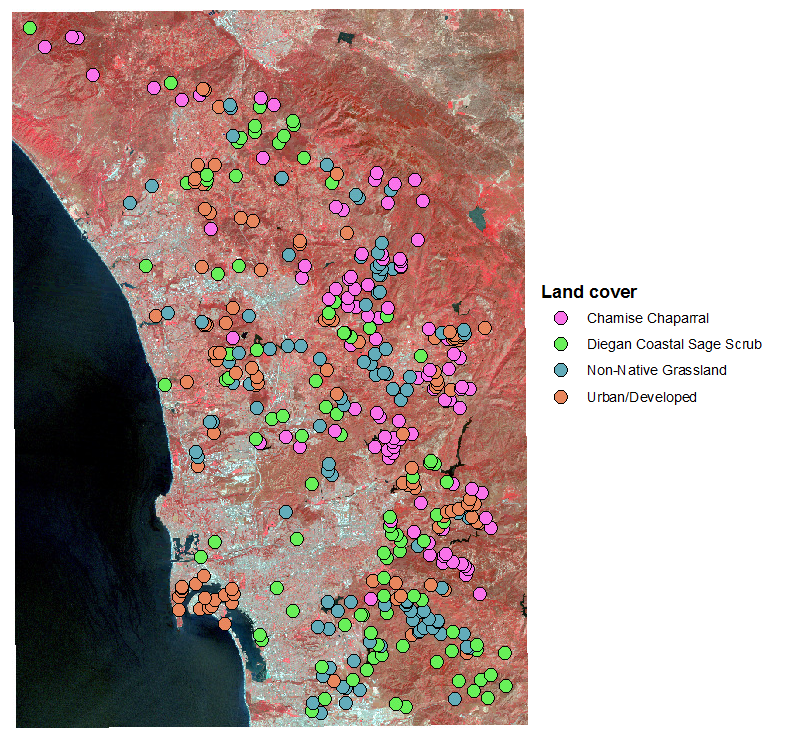Different kinds of land cover reflect EM radiation differently. The differential reflectance of visible light bands is what we perceive as color - for example, red objects reflect red light while absorbing other colors, green objects reflect green light while absorbing other colors, and so on. Infrared radiation is also differentially reflected, and the typical pattern of reflectance across the seven bands recorded is called the spectral signature for that cover type. The image to the left is a false color image in which one of the infrared bands is assigned to the red channel of the image, so that the otherwise invisible infrared reflectance can be seen - bright red areas have the highest reflectance of this near-infrared band, which is associated with high levels of photosynthetic activity.
The data set we will work with was generated by placing 100 points on a map of coastal San Diego county in areas with known land cover types - chamise chaparral, Diegan coastal sage scrub, non-native grassland, and urban/developed land. The reflectance on each of the seven bands for each of these 400 points was then read from the map for each point, giving us a set of 400 points grouped by land cover, measured on seven variables.
We will be interested in characterizing the spectral signatures for each cover type, and in using the spectral signatures to predict cover type - if the cover types are sufficiently distinct in their spectral signatures in this sample of 400 points with known cover types we may be able to use the spectral signatures to map the land cover across the entire map, including the parts of the map for which we do not already know the cover type.
But, before we use multivariate methods to analyze the spectral signatures we need to screen the data. I will walk you through the steps used to screen the data for this data set - focus on understanding the reasons for each of the steps, and you will apply them on the shell and teeth data below.
First we want to assess univariate violations of assumptions. Graphical methods are good for this, and we will use boxplots, normal probability plots, and histograms. The boxplots of reflectance for all of the bands, grouped by cover type, look like this:
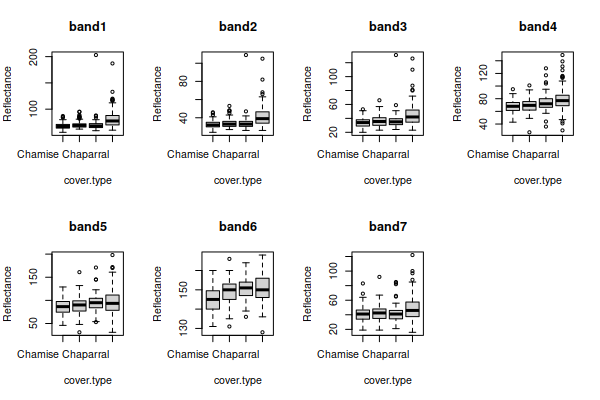There seems to be some right skew in several of the variables, because the boxes are bigger on top than on the bottom and the unusual data values (the points beyond the whiskers) are mostly large reflectance values.
For the normal probability plots and histograms we want to use residuals (differences between data values and means) so that differences in group mean among the cover types don't make us think we have non-normal distributions. We can then plot the residuals as normal probability plots:
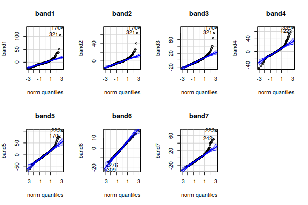Lots of apparent non-normality in the residuals.
From the boxplots we might suspect this is due to right skew in the data, which we can confirm with histograms of the residuals:
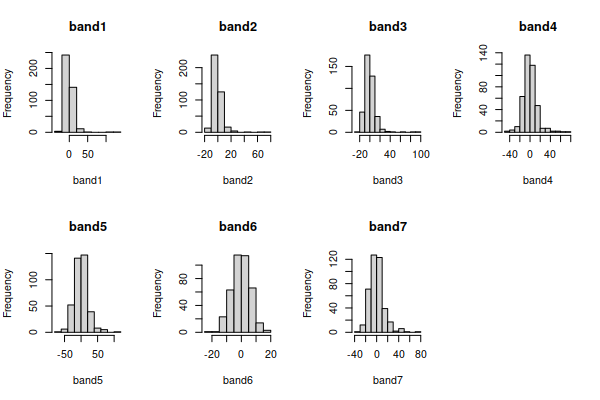The only band that looks nearly bell-shaped is band6, and the rest are right skewed - that is, the distribution is not symmetrical around the mode (i.e. the tallest bars), and the long tail points in the direction of the skew.
Right skew is often fixed by a log transformation, If we take the log of the data in each band, and re-do the graphs for the log-transformed variables we'll see that the boxplots:
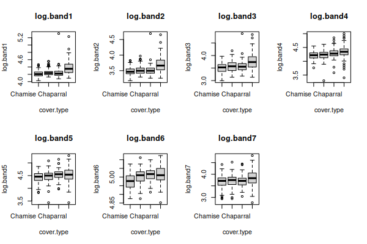normal probability plots:
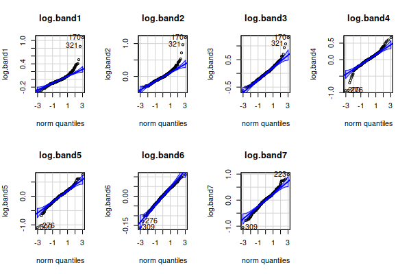and histograms:
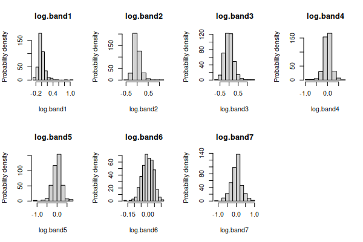all have distributions that look much better, except for band6 which was already fine.
There are still some apparent outliers, but those could be data problems - the points were selected at random within areas of known cover type, but within an area with a given general land cover type there are particular points that are not actually that type of cover (for example, a large rock outcrop in a patch of coastal sage scrub, or a city park inside of a developed area). Points that are actually measuring something other than the intended land cover can produce odd measurements that don't really fit with the rest of the data in the category. At this point, though, the fact that the distributions are looking much more bell shaped is enough justification to move on to the next step.
Based on our univariate screening we should use the log of bands 1-5 and 7, and the un-transformed version of band6. If we make a scatterplot matrix of these seven variables we get:
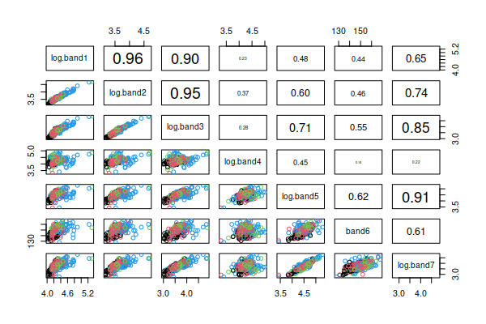This type of graph displays the two-variable (bivariate) relationship between every pair of variables in the data set, with point color indicating the cover types. Rather than using the upper triangle to duplicate the scatter plots in the lower triangle we will use the upper triangle to report the correlation coefficients for each pair of variables (the variable names are in the main diagonal, and each pair of variables meet in two places, one above the diagonal in the upper triangle and one below the diagonal in the lower triangle - where they meet in the lower triangle is their scatterplot, and where they meet above the diagonal is their correlation). You can see that the scatters of points look either fairly un-patterned (if the correlation is small), or straight lines (if the correlation is large) - we seem to have linear relationships between the variables, which is what we want.
Now that we have achieved bell-shaped univariate distributions and linear bivariate relationships we can check for multivariate distribution problems. Using the residuals, we can calculate the Mahalanobis distances, and plot them against the Chi-square distribution, which looks like this:
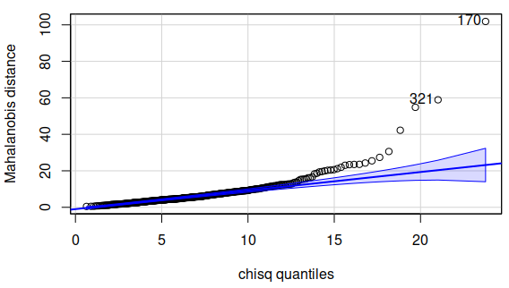There are quite a few Mahalanobis distances that are outside of the confidence band, so there seem to be some points that have unusual combinations of measurements across the variables. We can get an idea of which observations might be off by making a parallel coordinates plot:
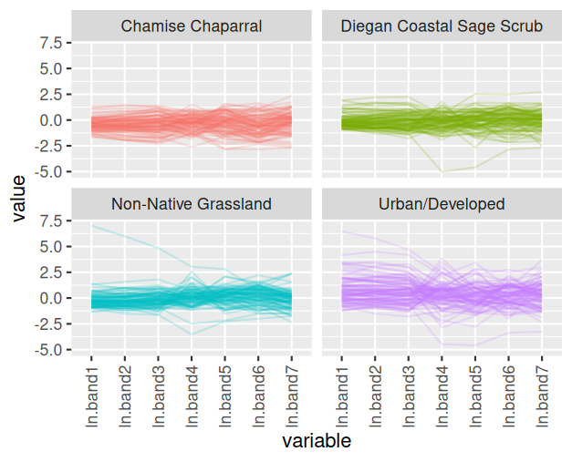You can see that there is one observation in the Diegan coastal sage scrub group that has very low measurements on ln.band4 and ln.band5, and fairly low on ln.band6 and ln.band7, but has pretty typical values for the other bands. Likewise there are some points in the non-native grassland and urban/developed cover types that have unusually high or low measurements for only some of the bands.
The next step would be to check for data errors. I will examine those points on the map, and if the points are clearly not in the right type of cover I'll drop them from the data set.
Make a new R Studio project for today's exercise, and call the project "data_screening". The data file is here, and the R Markdown document for this exercise is here.
These instructions will walk you through each step of the process of screening the shell data. You will then repeat the steps for teeth and landsat data sets below.
1. Import the shell data into R. In your R Markdown file, type the command (in the import.shells chunk):
library(readxl)
data.frame(read_excel("multivariate_data_f22.xlsx","shells")) -> shells
Enclosing the read_excel() command inside of a data.frame() command converts the data into R's data frame format. The format that read_excel() uses is called a tibble, which is newer than the data frame, but some functions don't support it yet - converting the format at the outset prevents weird errors that don't make any sense in context later on.
If you open the shells data you'll see the columns are shell.num, shell.type, major.axis, minor.axis, surface.len, height, depth, and weight. The shell.num column is just an identifier (the number written on the shell), so we will not check its distribution.
2. Check for missing data values. All of our data sets are complete, so we don't need to do this for our data, but you should get used to checking for missing values just in case. We can check for missing values fairly easily. Use the command (in the Console):
complete.cases(shells)
This command checks for missing values for each row, and if there are none the row (i.e. case) is complete and it returns TRUE. You should see a TRUE for every row of the table. We have a small enough data set to easily scan for FALSE, but to summarize the results you can make a table from this complete.cases() output that counts up how many complete (TRUE) and incomplete (FALSE) rows there are. We do this by using the output of complete.cases() as the input for the table() function, like so (in the complete.cases.shells chunk):
table(complete.cases(shells))
You should see as output:
TRUE
120
This tells you that the data set has 120 complete cases, and no incomplete cases (if there were complete cases FALSE would have also been reported).
Missing data
We have only complete cases, so we don't need to do anything else with our shells data. But, missing measurements are not uncommon in multivariate data sets, and if we did have missing values we would either need to go back and measure the variables that were missing or we would need to drop the cases.
Dropping incomplete cases is not hard in R, but it takes some explanation. First, to see how it works we need a dataset that has missing values - there is a dataset provided as part of the R base package called airquality, one of the data sets I used for the 3D spinning scatterplots I made for you to play with. It has some missing values in it, so will be useful for this explanation. Do the following in the Console.
First, to load the data set you need to use the command:
data(airquality)
You will see airquality show up in your Environment as a "promise", which means it will be loaded the first time you use it - click on it to open it and you'll see that there are blanks in the Ozone and Solar.R columns, indicated with NA. NA is R's way of saying that there is nothing entered, and it is not the same as the characters "NA", which would be entries of the wrong data type in a numeric column. The View window actually places the missing value NA's in gray italics to make it clear that they are not just text labels.
Now, to drop rows that have missing values, we first need to know how to use row and column indexes, which are just the row and column number. For example:
airquality[1, 2]
refers to the data value in the first row and second column of the data set, which is equal to 109. Index numbers go into square brackets after the name of the data set (with no spaces between the data set name and the opening bracket), and the format is:
data.set.name[row.index.number, column.index.number]
If you leave a row or column index number blank you will get all of the rows or all of the columns - thus:
airquality[1, ]
returns the entire first row with all of the columns in the data set.
You can also extract multiple rows by concatenating numbers together with the c() command - to get the first three rows we could use:
airquality[c(1,2,3) , ]
You can also use ranges of number by specifying the first and last index you want, separated by a colon, like so:
airquality[1:3, ]
You can mix and match these approaches - if we wanted rows 1 through 3, and also row 5, we could use:
airquality[c(1:3,5) , ]
Finally, R writes TRUE and FALSE as the output for complete.cases(), which makes it appear to be giving us text as output, but in fact these are logical or Boolean values. We can use logicals in the row index to indicate if we want a row or not. For example, the command:
airquality[complete.cases(airquality),]
uses the output of complete.cases in the row index of airquality, and any row with a TRUE from complete.cases() is selected. If you scroll through the output you'll see the rows that had NA for either Ozone or Solar.R have been dropped. If we assigned this output to a new data set we would have only the complete cases in the new one.
Alternatively, we could use complete.cases() to find the rows which are not complete so we can fix them. We could use the command:
airquality[!complete.cases(airquality),]
The exclamation point is interpreted as not, so this has the effect of changing all the TRUE's to "not true" (which means FALSE), and all the FALSE's to "not false" (which means TRUE). If you look at the output you'll see that every row returned by this command is missing either Ozone, Solar.R, or both, and we could enter the values into the data set if we had them.
But, this is not a problem we have to contend with for the shells data - we have complete cases for all of the shells, so we can move on.
3. We can now begin looking for univariate outliers and deviations from normality.
To look for univariate outliers and non-normality issues, we can lay out our graphs in a grid with two rows and three columns so that all six of the variables can be displayed in one multi-paneled graph. When we are using R's base graphics we can lay out multiple graphs using the par() command, which is short for graphical parameters. The argument to par() that determines how many rows and columns of graphs there will be is mfrow(), so in the shell.boxplots code chunk write:
par(mfrow=c(2,3))
Then, in the same code chunk run the commands to make the boxplots. You will need one for each variable, and the first will be:
boxplot(major.axis ~ shell.type, data = shells, main = "major.axis")
Add the other five boxplot() commands below this one, and they will be plotted one at a time into the six panels of your graph. Make sure to use main = variable name so that the plots will have the variable name in the title.
One thing that I've found very useful for working with multivariate data in R is to make a list of the names of the columns in the data set that have our numeric variables in them - this makes it much easier to refer to them as a group, and to automate operations that are applied to them one at a time. In the chunk make.shell.var.list enter:
shell.vars <- c("major.axis", "minor.axis", "surface.len", "height", "depth", "weight")
You now have the names of the numeric variables present in the shells data set stored in shell.vars.
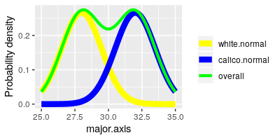It is both a blessing and a curse that R can do the same thing multiple ways. For example, if you look at the shells data set you'll see the variables are in column 3 through 8, so we could have gotten our list of shell.vars using (in the Console):
colnames(shells[ , 3:8])
This method identifies the shells data set, and then uses square brackets to indicate the columns whose names we want to extract - the second position in the square brackets identifies the columns, and using 3:8 tells R to use columns 3 to 8.
You can also get the list of variables by dropping the two columns from the data that are not numeric variables using:
colnames(shells[ , -c(1,2)])
Putting the column numbers you want to drop within a vector, using c(1,2), allows you to drop them both by putting a negative sign before them - that is, -c(1,2) says "drop columns 1 and 2".
Both of these options are simpler than typing the names of the variables, so why make you type them? Any of these approaches are fine, but I like to start you off typing the variable lists because it makes your code more more self-documenting - in other words, you can tell what the code is doing by reading it, without having to go look at which variables are in the columns, if you type out the variables to be used in the shell.vars list. This helps you learn why you're doing what you're doing, but it also helps you remember what you were doing if you stop working for awhile and come back days or weeks later.
That is also a good justification for using object names that make sense - rather than assigning the names of the variables to an object called "v1" we used "shell.vars" so that it is more obvious what the object is when we use it later in the analysis. No point in making things more confusing than they absolutely have to be!
Next we are going to make normal probability plots to assess normality of each variable, but we have a small problem - the shells come in two different types, and even if each type has normally distributed data differences in their averages could produce a separate mode for each group in the overall set of measurements. You can see this possibility illustrated in the graph to the left - the yellow curve (white shells) and the blue curve (calico shells) are nice and bell-shaped by themselves, but if we ignore that they are different shell types and plot them together they make the green curve, which is not bell-shaped at all.
We can get rid of this potential problem by using the differences between the data values and their group means (i.e. the residuals) for our test of normality, because residuals center on 0 - differences in mean between the groups are removed, and we can focus on the distribution of the data within the groups.
There are several ways we could accomplish this task in R, but the simplest way is to get the residuals from an ANOVA model in which shell.type is used as the grouping variable. And, since we have multiple variables we can use a multivariate ANOVA (or MANOVA) so that we can get all of the residuals for every variable at once. That's the good news.
The bad news is that we haven't learned about MANOVA yet, and won't for another couple of weeks. For now, just enter the commands in order to get your residuals, and don't worry about interpreting the MANOVA - we will cover MANOVA as a data analysis procedure later.
To get the residuals, use the command (in the residuals.from.MANOVA chunk):
manova(as.matrix(shells[shell.vars]) ~ shell.type, data = shells) -> shells.manova
data.frame(residuals(shells.manova)) -> shells.resid
The first command executes a MANOVA and places the output into an object called shells.manova, and the second command extract the residuals from shells.manova, converts them to a data frame, and puts them into shells.resid. R needs the response variables in a multivariate ANOVA to be in a matrix format, so we had to use as.matrix() to convert the variables into a matrix to use them - notice that we used our shell.vars list to identify which variables to use as the responses. Similarly, we converted the matrix that is produced by the residuals() command into a data frame format by putting the residuals() command inside of a data.frame() command - the shells.resid object is thus an R data frame.
If you open shells.resid from your Environment you'll see you have positive and negative values, which are differences between data values and their group means - negative residuals indicate the data value was below the group mean, positive ones indicate the data value was above the group mean (residuals are always calculated by subtracting means from data values, so that we know to intepret negatives as values that are below the mean).
Next, to get normal probability plots we will use a function from the car package called qqPlot(). The syntax for the command is simpler than the functions provided in base R, and by default the plot includes a 95% confidence band that we can expect 95% of normally distributed data points to fall within. To use qqPlot() we first need to load the car library. In the shell.qqplot code chunk enter:
library(car)
Now that car is loaded you can make your first qqPlot() (just below the library(car) command):
par(mfrow = c(2,3))
qqPlot(shells.resid$major.axis, distribution = "norm", main = "major.axis", ylab = "major.axis")
The first argument identifies the data (shells.resid$major.axis), the second identifies the statistical distribution to compare our data to (distribution = "norm"), and the third gives the title for the graph (main = "major.axis").
You'll see that the normal probability plot appears in the first column of the second row, just below the major.axis boxplot - it should look like this:
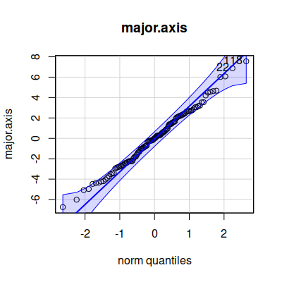The qqPlot() command plots the observed data on the y-axis (labeled "norm quantiles"), and the expected distance from the mean if the data were normally distributed along the x-axis (labeled "norm quantiles" - these are standardized values, meaning that the units are standard deviations). The diagonal line indicates where the data values should fall if they perfectly match the normal distribution - we would like to see the points falling right on the line, but if not that we would like them to be scattered randomly and evenly around the line; the blue band is the 95% confidence interval, so at the very least we don't want to see more than 5% of our data points falling outside of it.
Add a qqPlot() command for each of the remaining five variables.
You may have a difficult time seeing all of the graphs because they are so small - you can click on the "Show in new window" button, which is the first of three buttons in the upper right corner of the plot output, and you should be able to make the plot window full screen for easier interpretation. Look for extreme values in the boxplots (dots above or below the whiskers), and patterns in the dots on the normal probability plot that deviate from a straight line.
We will also want to look at histograms. To see them better we can lay them out with two rows of three histograms (shells.histo chunk):
par(mfrow = c(2,3))
hist(shells.resid$major.axis, main = "Major axis", xlab = "Major axis")
Enter hist() commands for the remaining five variables.
You'll see that weight looks a little right skewed, so we'll see if that translates into a non-linear relationships with the rest of the variables in the next step.
4. Next we can look for bivariate relationships and bivariate outliers.
R has a scatterplot matrix command called pairs() that plots each pair of variables against each other. It's structured like a correlation matrix, so each pair of variables occurs twice, once above the diagonal and once below it. If you look at the pairs() command's help pages (by typing help(pairs) in the Console) you'll see that we can add a function that lets us put the correlation coefficients into the upper or lower triangle, so that we get some additional information instead of repeating the same graph twice. The function is already in the panel.cor.function code chunk of your Rmd file, so run that code chunk now to add the function panel.cor() to your environment.
To get the pairs() plot we'll use (in the console):
pairs(shells[shell.vars], upper.panel = panel.cor)
You'll see that we have scatterplots in the lower triangle, and correlation coefficients in the upper triangle with the size of text proportional to the size of the correlation. If you have a hard time seeing the individual graphs you can click the icon just to the upper right of the graphs (like this: ) to get the graph in its own resizable window.
We'll have an easier time interpreting the graphs if we color the points by their shell.type, which we can do with (in the pairs.plot code chunk):
pairs(shells[shell.vars], upper.panel = panel.cor, col = factor(shells$shell.type))
We told pairs() to color by shell type, but first we had to convert shell.type to a factor. Factors are an R variable type that have a level (which is the text label that you see displayed) and an underlying numeric value that is assigned. If you type in the Console:
factor(shells$shell.type)
you'll see that the shell.type variable looks like this:
[1] Calico Calico Calico Calico Calico Calico Calico
Calico Calico Calico Calico Calico Calico Calico Calico
[16] Calico Calico Calico Calico Calico Calico Calico Calico Calico
Calico Calico Calico Calico Calico Calico
[31] Calico Calico Calico Calico Calico Calico Calico Calico Calico
Calico Calico Calico Calico Calico Calico
[46] Calico Calico Calico Calico Calico Calico Calico Calico Calico
Calico Calico Calico Calico Calico Calico
[61] White White White White White
White White White White White White
White White White White
[76] White White White White White
White White White White White White
White White White White
[91] White White White White White
White White White White White White
White White White White
[106] White White White White White
White White White White White White
White White White White
Levels: Calico White
The "Levels" at the end are the labels that R uses for the two different types of shell in this factor. To see the numbers you can type (still in the Console):
as.numeric(factor(shells$shell.type))
and you'll see the numeric codes that R assigned when it converted the variable to a factor:
[1] 1 1 1 1 1 1 1 1 1 1 1 1 1 1 1 1 1 1 1 1 1 1 1 1 1
1 1 1 1 1 1 1 1 1 1 1 1 1 1 1 1 1 1 1 1 1 1 1 1 1 1 1 1 1 1
[56] 1 1 1 1 1 2 2 2 2 2 2 2 2 2 2 2 2 2 2 2 2 2 2 2 2 2 2 2 2 2 2 2
2 2 2 2 2 2 2 2 2 2 2 2 2 2 2 2 2 2 2 2 2 2 2
[111] 2 2 2 2 2 2 2 2 2 2
Colors are also numbered in R, with 1 equal to black and 2 equal to red. Using col = factor(shells$shell.type) tells R to use black (color 1) for the Calico shells (whose numeric code is 1), and red (color 2) for the White shells (whose numeric code is 2).
You'll see a scatterplot matrix that looks like this:
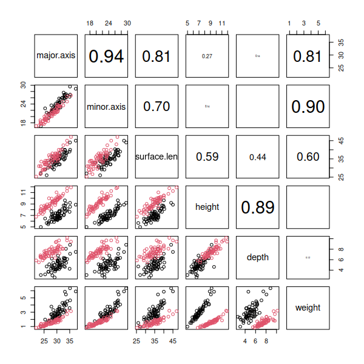Look over the plot and see if any of the scatterplots appear to be following something other than a straight line. Since weight is a function of the shell's volume, but all the other measures are linear measurements, we should expect that the various linear dimensions we measured with the calipers and tape measure might have a non-linear relationship to weight, and that's what we see - the bottom row of graphs shows some curvilinear scatters of points.
5. Weight showed signs of being right-skewed and non-linearly related to the other variables, which we can address by log-transforming it. We can log-transform a variable in R by taking the log of one column and assigning it to a new column in the data set (in chunk log.transform.weight).
shells$ln.weight <- log(shells$weight)
The log() function calculates the natural log (i.e. log base e) of the weight variable, and these logs are then assigned back to a new variable in shells we're calling log.weight - to make this new variable we just need to give it a name and assign data into it.
We can add the log.weight residuals to shells.resid the same way - we don't need a MANOVA since we just have one variable, so an ANOVA will suffice (log.transformed.residuals chunk).
shells.resid$ln.weight <- residuals(aov(ln.weight ~ shell.type, data = shells))
Now that the transformation is done, you should check to see if it made things better - make a boxplot, normal probability plot, and histogram for ln.weight. Put these in chunk replot.ln.weight (use mfrow = c(2,2) to make room for all three graphs), and you'll see they look better. Try to figure this out yourself, but If you're stuck click here to see the command.
6. We will be making a scatterplot matrix next, with ln.weight replacing weight. Since weight is the sixth variable name in shell.vars we can replace it with ln.weight using (put this one in the shell.variables chunk):
shell.vars[6] <- "ln.weight"
We can now use shell.vars again to plot a scatterplot matrix with pairs() to confirm that the non-linearities we saw with weight are all resolved with ln.weight (pairs.plot.log.weight chunk):
pairs(shells[shell.vars], col = factor(shells$shell.type), upper.panel = panel.cor)
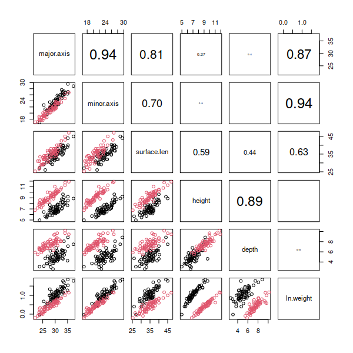You should see that log transformation did a good job of making ln.weight normally distributed (according to the boxplot and normal probability plot), and all of the scatterplots that include ln.weight now look nice and linear in the pairs plot.
We can move on to checking the multivariate distribution of the data next.
6. We will check for various multivariate issues that don't show up using uni- and bivariate graphs by calculating the Mahalanobis distances of the shell data points. The command that gives us Mahalanobis distances is mahalanobis(), and it requires us to give it:
We have the shell residuals already, but we will need to compute the means and the covariance matrix before we can calculate the Mahalonobis distances.
We can get the means of the residuals using (means.of.residuals chunk):
colMeans(shells.resid[shell.vars]) -> shell.means
This command, colMeans(), calculates means for each column in our shells.resid data frame, for the variables listed in shell.vars. You can see some of the values of shell.means in your Environment, and they are all tiny (all are exponents to the -17). Since these are residuals the means should actually be exactly zero, but computers can give you very tiny values instead of zeros due to the problems with converting base 10 decimal numbers to base 2 (or binary) numbers that computers use. We could replace these tiny numbers with 0's, but the difference between 10-17 and 0 is small enough to not be an issue here, so we'll stick with our tiny numbers. (Why should the means be zero? Click here to see if you're right.)
Getting the covariance matrix is simple - type (covariance.matrix chunk):
var(shells.resid[shell.vars]) -> shell.cov
which will give you the covariance matrix for the residuals.
Finally, we can get our Mahalanobis distances and assign them to our shells data set (mahalanobis.distances chunk):
mahalanobis(shells.resid[shell.vars], shell.means , shell.cov) -> shells$mahal
which calculates Mahalanobis distances, based on the means (in "shell.means") and covariance matrix (in "shell.cov"), and places the result in a new column in the shells data set called mahal.
Now that we have the Mahalanobis distances, we can make a plot that compares the distribution of the distances to what would be expected if we met the assumption of multivariate normality - from this plot we will be able to identify multivariate outliers (if any). We will use qqPlot() again, but this time we will use the Chi-square distribution instead of the normal. The shape of the Chi-square distribution depends on degrees of freedom:
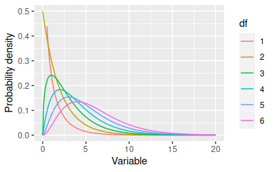The x-axis is typically a Chi-square value, but you can consider the x-axis to be Mahalanobis distances in this case. The degrees of freedom we will use is equal to the number of response variables we are working with. You can see that as the degrees of freedom increases the distributions get more spread out toward large numbers - which for our purposes tells us that bigger Mahalanobis distances should be expected when we're calculating distances using more variables.
To get the right Chi-square values to compare our Mahalanobis distances against we need to specify the degrees of freedom. We are using six variables for the shells data, so enter the command (mahalanobis.vs.chisquare chunk):
qqPlot(shells$mahal, distribution = "chisq", df = 6, id = list(n = 8), ylab = "Mahalanobis distance")
The first two arguments are just like your normal probability plots - first the data to be plotted are identified, and then the distribution to use is named. The next argument is the degrees of freedom for the Chi-square distribution. The final argument is a little weird, but it governs how many points will be labeled by row number on the plot - all we want is to tell qqPlot() to label the biggest 8 points, but since there are several possible things we could set with this argument we need to provide the argument as a "list", which is an R data structure. The list(n = 8) argument just tells qqPlot() to label the largest 8 values by their row number on the graph. The graph will look like this:
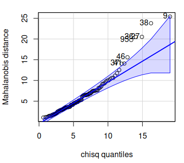You'll see that although the distributions all looked fine in our univariate and bivariate plots, there are some shells that are outliers in the multivariate distribution. The numbers labeling the offending points are row numbers from the shells data, so if you open up shells and look at the rows that are outside of the confidence bands in the Mahalanobis qqPlot you may see why - look for combinations of measurements that are unusual.
Since the problematic shells are the ones with the biggest Mahalanobis distances you can also open the shells data by clicking on it in your Environment, and then click on the mahal column to sort on it (clicking sorts the column, clicking again reverses the order, so click until the big mahal numbers are at the top). Once the data are sorted the shells with big distances will be at the top, and you can see which of the shells need to be checked for errors.
7. Another way to look for multivariate outliers is to do a parallel coordinates plot - with just six variables we should be able to interpret a parallel coordinates plot easily, and use it to see which of the variables are producing unusual measurements.
There is a ggplot2 extension library called GGally that implements a parallel coordinates plot. You may need to insall GGally, but once you have it load it in the ggparcoord chunk. The command is ggparcoord(), but it has an unusual syntax, and we have to fix a couple of default options that I don't care for, so we'll work our way up to the final version.
In the console, enter the command:
ggparcoord(shells, columns = c(3:7,9)
This will give you a basic graph that looks like this:
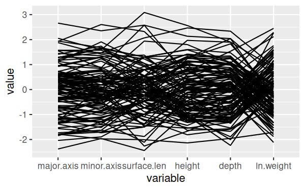It's a little hard to see the lines, since they are over-writing one another - we can make that better by allowing for some transparency in the lines. Transparency in an image is handled by an "alpha layer", so this setting is set by the alphaLines argument - recall your command in the console and change it to:
ggparcoord(shells, columns = c(3:7,9), alphaLines = 0.2)
This will give you a version that is much easier to see individual lines:
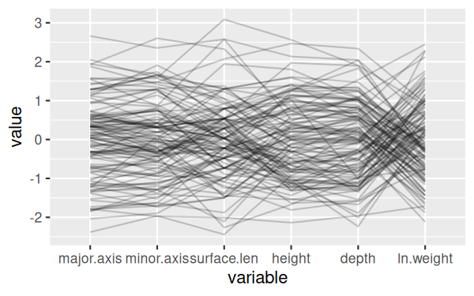Next we can split the shells by shell type - modify the command in the console to:
ggparcoord(shells, columns = c(3:7,9), alphaLines = 0.2, groupColumn = "shell.type")
This version of the graph is pretty good:
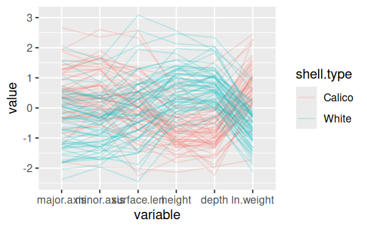but it would be nice to separate the two different shell types to make them easier to see - change the command to:
ggparcoord(shells, columns = c(3:7,9), alphaLines = 0.2, groupColumn = "shell.type") + facet_wrap(~shell.type)
Now we don't really need the legend anymore, because the shell types are in the headings for the two panels, so we can remove the legend:
ggparcoord(shells, columns = c(3:7,9), alphaLines = 0.2, groupColumn = "shell.type") + facet_wrap(~shell.type) + theme(legend.position = "none")
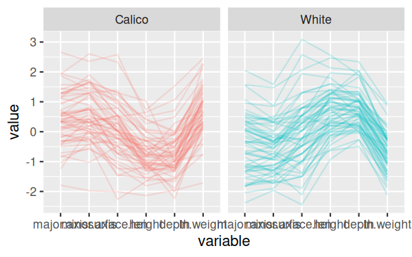And finally, the final version of the command rotates the x-axis labels to make them easier to read, and places them up against the x-axis - put this last version in your Rmd file, ggparcoord chunk:
ggparcoord(shells, columns = c(3:7,9), alphaLines = 0.2, groupColumn = "shell.type") + facet_wrap(~shell.type) + theme(legend.position = "none", axis.text.x = element_text(angle = 90, hjust = 1, vjust = 0.5))
The final version of the graph looks like this:
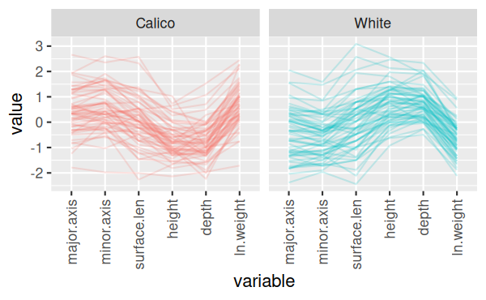
You can see now that there's one calico shell that has low measurements on every variable, which is unusual, as well as one with a short surface length but typical values of everything else, and a couple that have big values for minor.axix and surface.length (major.axis for one of the two as well).
Since we still have the shells in hand we can just find which ones are off (using the Mahalanobis distances) and re-measure them for the variables that are causing the problems. If we didn't have the shells anymore we would have to make some tough choices - we could drop a variable or two if the problems could be resolved that way, and the variables were not essential. If we couldn't drop variables we could consider adding predictor variables if there was something about the shells that we could account for (perhaps age differences, juvenile/adult, male/female differences, or the like). If that didn't work we could consider dropping the data point, but that's a last resort and shouldn't be done unless there is good reason to think the measurements are in error, rather than merely inconvenient.
If all else fails we can run the analysis with all of the data points included, and then re-run it with the problematic data dropped to see if the results change in important ways. If the interpretation of the results are no different with and without the data points then the decision is much less important. If the interpretation of the results depends on the choice we make we should be up front about this when we present the results.
Now that you know what to do, repeat this procedure for the teeth data.
Import the teeth data (same Excel file, worksheet "teeth" - put the data into an object called teeth...don't forget to use data.frame() to convert the format). You can figure this out, we've done a lot of importing now (go look at the shells data import command if you need a reminder, and ask me if you can't figure it out).
You will need to make boxplots, histograms, and qqPlots of the teeth data, but you can speed up the graphing a lot using the lapply() function. The lapply() function is one of a family of commands in R that execute a function repeatedly on various subsets of data we specify. All are variations on the apply() function, and we've already used one of them, tapply(), to get summaries of data grouped by a column in the data set. The lapply() function is similar, but it applies a function of our choosing to each element in a list or vector.
As before, we need a list of variables, which are (boxplots.teeth chunk):
c("weight", "length", "width.crown", "width.root", "depth", "surface.len", "thickness") -> teeth.names
With seven boxplots you'll want to use two rows and four columns (next row of boxplots.teeth):
par(mfrow = c(2,4))
Now, the lapply() command is (next row of boxplots.teeth):
lapply(teeth.names, FUN = function(x) boxplot(teeth[,x], main = x, ylab = x))
You should now have two rows of four boxplots for the teeth measurements. What exactly did lapply() do?
This same approach can be used to make the normal probability plots and histograms - you don't need to get residuals first because there are no groups in the teeth data, so just use the teeth data set for these graphs. See if you can write an lapply() command to get your normal probability plots and your histograms (put the qqPlot() version of the lapply() command in chunk qqPlots.teeth, and the histograms into teeth.histograms). Try the commands yourself, but if you're stuck click here to see the command.
The pairs() plot will not need a color argument, because there are no groups for the teeth data (pairs.plot.teeth chunk):
pairs(teeth[teeth.names], upper.panel = panel.cor)
If you see any non-linear relationships, or skewed distributions try a log-transformation and plot again (you may not see any, the teeth data look pretty good to me without transformations...hint, hint). Skip over the code chunks for plots of log-transformed variables if you don't transform any.
Once you have the variables the way you like them check for multivariate outliers using Mahalanobis distances (in the mahalanobis.distances.to.teeth.dataset chunk). Since there are no groups you don't need residuals, and can get the column means and covariance matrix from the teeth data set. Try the commands yourself, but if you're stuck click here to see the command.
Make the qqPlot() of the Mahalanobis distances - you'll need to id 10 observations to get all the points that are outside of the confidence envelope labeled (mahalanobis.quantile.plot.teeth chunk). You've got this, right? If not,click here to see the command.
You can sort the teeth data based on your mahal column to see which ones need to be fixed.
Finish with a parallel coordinates plot - you won't need to group or facet these, there will just be one panel, but you will still need to rotate the x-axis labels so you can read what all the variables are. See if you can modify the command you already did for shells to work with teeth, but click here to see the command if you need some help
It should be pretty clear that one tooth has a very low width.crown and a very high width.root, and should be checked. There are some other teeth with low width.crown and high width.root measurements, but to a lesser degree - they could be checked as well. It appears that thickness may be producing some unusually small values, so those could be confirmed before proceeding. You may see some other potential issues as well, if fixing the more obvious ones proved to be insufficient.
Upload the knitted Word file to complete the assignment.